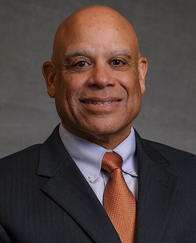

Mark Dean
Mark Dean is a computer engineer who helped shape the personal computer revolution. He was chief engineer of the 12-person team that designed the original IBM PC in the early 1980s, and he holds three of the nine original patents for that machine. He also co-developed the Industry Standard Architecture (ISA) bus, which made it possible to connect devices such as printers and monitors directly to a computer.
He grew up in Jefferson City, Tennessee, where he was both a strong student and athlete. In sixth grade, a friend questioned whether he was really Black because he was "too smart to be Black." That experience stayed with him throughout his life. Dean later said, "There may be obstacles, but there are no limits."
His career at IBM spanned over 30 years. In 1995, he became the first African American to be named an IBM Fellow, the company’s highest technical honor. In 1997, he was inducted into the National Inventors Hall of Fame. He later led the team that created the first 1 GHz microprocessor. After retiring from IBM in 2013, he returned to his alma mater the University of Tennessee as a distinguished professor.
Learn More About Mark Dean
Tawana Petty
Tawana Petty is a data justice advocate, author, and technologist who works to make technology more fair and accountable. She is based in Detroit and has spent years raising awareness about issues involving digital privacy, surveillance technology, and the rights of communities that are often overlooked in technology discussions.
Petty became interested in these issues after seeing how technology can sometimes reinforce existing inequalities. She has spoken out about facial recognition systems and other forms of artificial intelligence that may unfairly impact people of color and other marginalized groups. Through community organizing and public education, she helps people understand how technology can affect everyday life.
In addition to her advocacy work, she is an author, educator, and community organizer. She has worked with researchers and activists to promote digital justice and equitable technology practices. Her work highlights the importance of privacy, fairness, and accountability in the digital world.